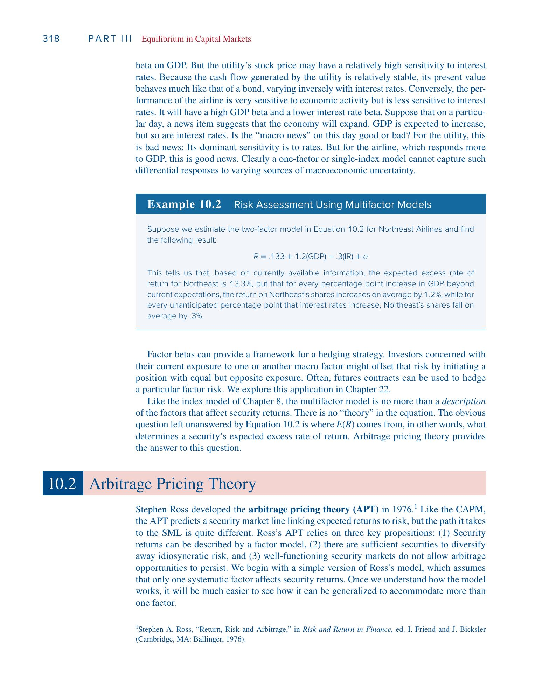
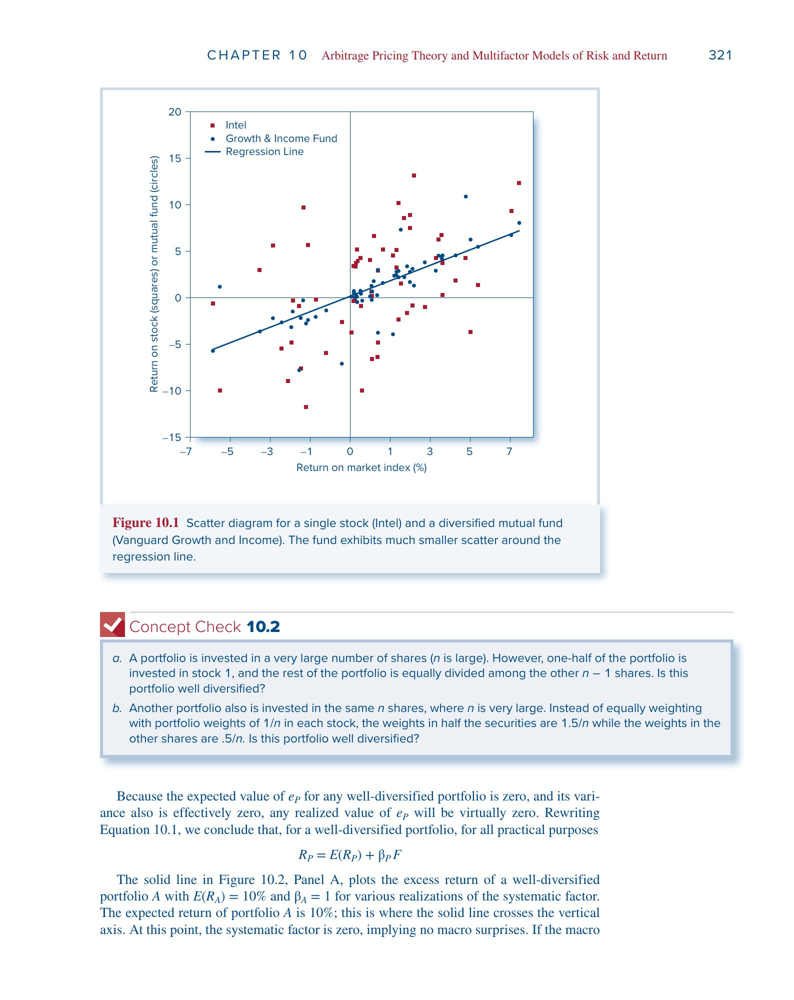
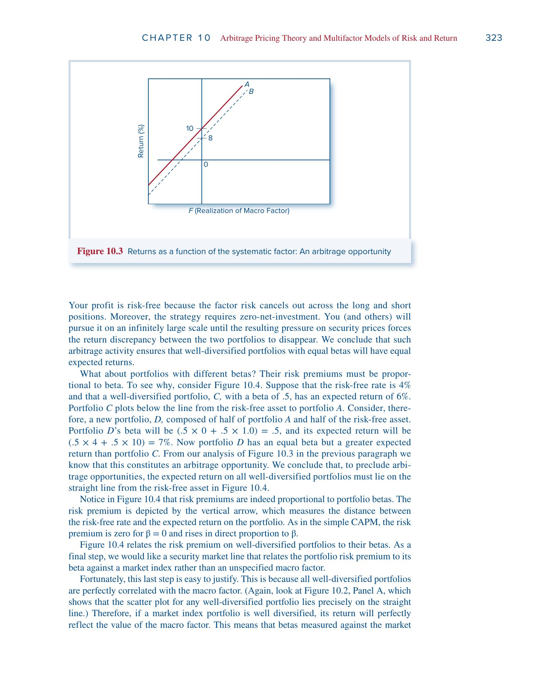
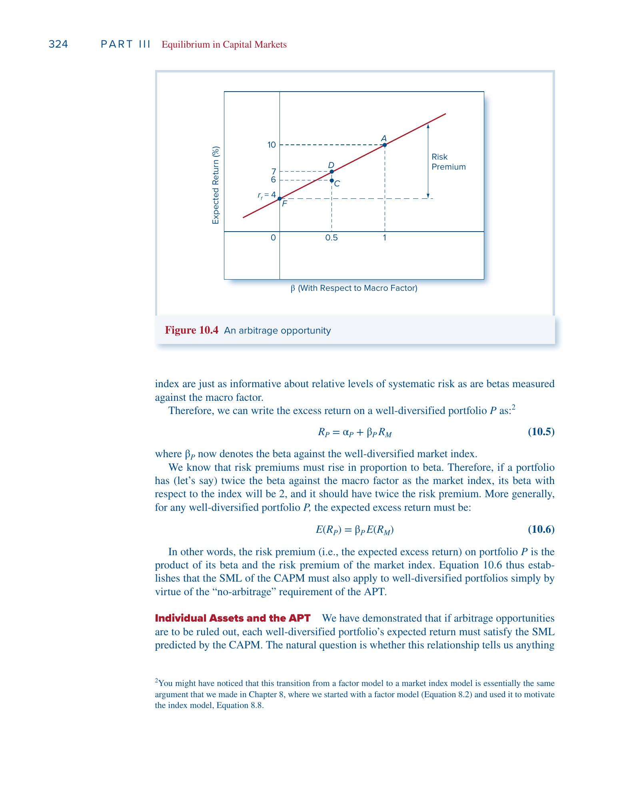
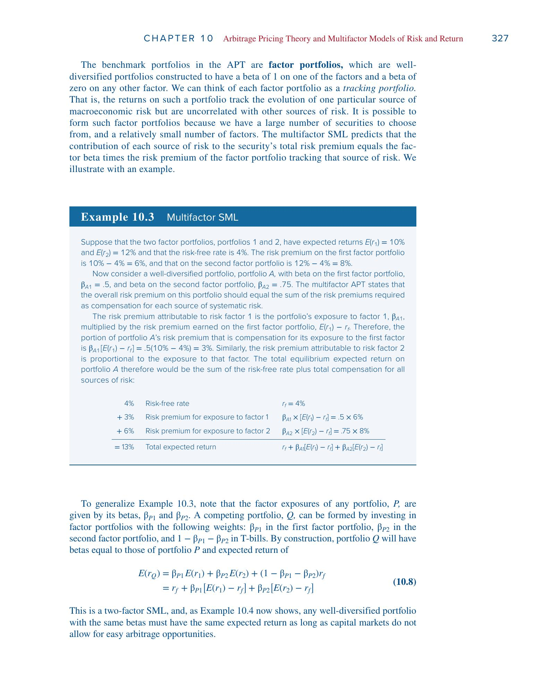
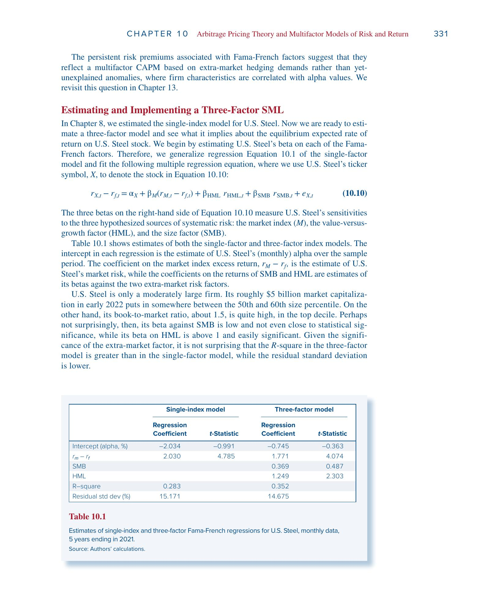

第10章 套利定价理论（APT）与多因子模型——完整学习笔记
本笔记基于 Bodie《Investments》第13版第10章，按照从零开始逐步推导的顺序整理。每一步在前一步的基础上展开，力求把"为什么"和"怎么来的"讲清楚。
一、起点：因子模型——股票收益到底从哪来？
1.1 一个最基本的问题
假设你持有一只股票。这个月它涨了5%，这5%是怎么来的？
你可以想到两类原因：
- 整个经济发生了什么事——比如GDP增长超预期、央行降息、油价暴跌。这些事情影响几乎所有的股票，只是影响的程度不同。这叫系统性风险（systematic risk）。
- 这家公司自己发生了什么事——比如发布了超预期的财报、CEO突然辞职、产品被召回。这些事件只影响这一家公司。这叫非系统性风险（idiosyncratic risk）或公司特有风险。
因子模型就是把这个直觉用一个公式写出来。
1.2 单因子模型
最简单的版本是单因子模型（Single-Factor Model）：
$R_i = E(R_i) + \beta_i F + e_i \tag{10.1}$
这个公式看起来简单，但每一项都值得仔细理解：
- $R_i$：股票 $i$ 在某个时期的超额收益（收益率减去无风险利率）。我们关心的不是收益本身，而是超过"无风险存银行"能拿到的那部分。
- $E(R_i)$：在这个时期开始之前，你预期这只股票能给你的超额收益。这是一个事前（ex ante）的数字。
- $F$：宏观因子的意外变动。注意，$F$ 不是宏观变量本身的值，而是"实际值 − 预期值"。如果大家预期GDP增长4%，实际也增长了4%，那 $F = 0$——没有意外。只有意外（surprise）才会导致股价波动，因为预期中的部分已经提前反映在价格里了。因此 $F$ 的期望值是零。
- $\beta_i$：股票 $i$ 对这个宏观因子的敏感度。$\beta_i$ 越大，宏观意外对这只股票的冲击越大。这就是所谓的"因子载荷"（factor loading）或"因子Beta"。
- $e_i$：公司特有的随机扰动。它的期望值也是零，并且和 $F$ 以及其他公司的 $e_j$ 都不相关——张三公司的丑闻和李四公司的新产品没有关系。
用大白话说： 这只股票的实际收益 = 你原来预期的收益 + 宏观经济给的惊喜（或惊吓）× 你对这个惊喜的敏感度 + 公司自己的随机波动。
1.3 一个具体的例子（Example 10.1）
假设宏观因子 $F$ 代表GDP增长的意外变化。市场共识是今年GDP增长4%。某股票的 $\beta = 1.2$。
如果GDP实际只增长了3%，那么：
$F = 3% - 4% = -1%$
这是一个"坏消息"——GDP比预期少增长了1个百分点。这个坏消息对股票的影响是：
$\beta_i \times F = 1.2 \times (-1%) = -1.2%$
也就是说，仅仅因为GDP不及预期，这只股票的收益就比你原来的预期低了1.2个百分点。再加上公司自身的随机事件 $e_i$，就得到了实际收益与预期收益的总偏差。
反过来，如果GDP增长了5%（$F = +1%$），这只股票会比预期多赚 $1.2%$。
1.4 因子模型和CAPM是什么关系？
这是一个非常关键的问题。我们把两个公式放在一起对比。
CAPM告诉你的是： 在均衡状态下，一只股票的期望超额收益应该是多少。
$E(R_i) = \beta_i , E(R_M)$
这是一个定价理论——它回答的是"$E(R_i)$ 应该等于多少"。
因子模型告诉你的是： 一只股票的实际超额收益等于什么。
$R_i = E(R_i) + \beta_i F + e_i$
这是一个描述性模型——它把已实现的收益拆分成几个来源，但不告诉你 $E(R_i)$ 应该等于多少。
| CAPM | 因子模型 (10.1) | |
|---|---|---|
| 性质 | 定价理论（告诉你 $E(R_i)$ 应该等于多少） | 描述性模型（把实际收益拆成几个来源） |
| 说的是什么 | 期望收益 | 已实现收益 |
| 有没有"理论" | 有，基于均衡推导 | 没有，只是统计分解 |
它们的联系在于：CAPM可以"填入"因子模型中 $E(R_i)$ 的位置。
因子模型说 $R_i = E(R_i) + \beta_i F + e_i$，但 $E(R_i)$ 等于多少？因子模型不知道。如果你接受CAPM，那么 $E(R_i) = \beta_i E(R_M)$，代入得到：
$R_i = \beta_i E(R_M) + \beta_i F + e_i = \beta_i \left[E(R_M) + F\right] + e_i$
注意 $E(R_M) + F$ 就是市场的实际超额收益 $R_M$（期望值加上意外变动），所以：
$R_i = \beta_i R_M + e_i$
这就是你在第8章学过的单指数模型。如果再加上一个截距项 $\alpha_i$：
$R_i = \alpha_i + \beta_i R_M + e_i$
在CAPM均衡下 $\alpha_i = 0$。如果 $\alpha_i > 0$，说明股票被低估了（实际给的收益比理论上"应得"的多）；$\alpha_i < 0$ 说明被高估了。
所以整个关系链是：
因子模型（提供收益的结构/骨架）+ 定价理论（CAPM或APT，填入灵魂）= 可检验的资产定价模型
二、为什么单因子不够——走向多因子模型
2.1 单因子模型的局限
单因子模型用一个宏观因子 $F$ 来概括所有的系统性风险。但现实中，影响股票的宏观风险来源不止一个——利率、通胀、能源价格、经济周期等等都在独立地发挥作用。而且不同的股票对不同的宏观风险的反应完全不同。
教材用了一个非常直观的对比来说明这一点。
2.2 电力公司 vs 航空公司
想象两只股票：
电力公司（住宅区供电的公用事业）：居民用电需求跟经济好不好关系不大——不管经济是繁荣还是衰退，你该开灯还是开灯，该开空调还是开空调。所以它对GDP的 $\beta$ 很低。但因为它的现金流非常稳定（像债券一样），它的股价对利率非常敏感——利率上升，它这种"类债券"资产的现值就会下降。所以它对利率的 $\beta$ 是高的负值。
航空公司：业绩高度依赖经济景气——经济好的时候大家飞来飞去出差旅游，经济差的时候首先砍的就是差旅预算。所以它对GDP的 $\beta$ 很高。但对利率的敏感度相对较低。
| GDP敏感度（$\beta_{\text{GDP}}$） | 利率敏感度（$\beta_{\text{IR}}$） | |
|---|---|---|
| 电力公司 | 低 | 高负值 |
| 航空公司 | 高 | 较低 |
现在假设某天新闻说：经济将扩张（GDP预期上调），但利率也将上升。
这个"宏观新闻"对谁是好消息，对谁是坏消息？
- 对航空公司：好消息！它主要看GDP，GDP要涨，它就受益。
- 对电力公司：坏消息！它主要看利率，利率要涨，它就受损。
单因子模型完全无法区分这种差异。 如果你只用一个市场指数来概括所有宏观风险，这两只股票对"市场"的 $\beta$ 可能差不多，但它们对不同风险源的反应截然相反。
2.3 双因子模型
为了捕捉这种差异，我们把模型扩展为两个因子：
$R_i = E(R_i) + \beta_{i,\text{GDP}} \cdot \text{GDP} + \beta_{i,\text{IR}} \cdot \text{IR} + e_i \tag{10.2}$
这里 GDP 和 IR 分别代表GDP增长和利率的意外变化（surprise），$\beta_{i,\text{GDP}}$ 和 $\beta_{i,\text{IR}}$ 分别衡量股票对两个因子的敏感度，叫做因子载荷（factor loadings）或因子Beta（factor betas）。
2.4 什么是Beta？——敏感度/传导系数
在我们继续之前，值得把 $\beta$ 这个概念彻底搞清楚。
$\beta$ 衡量的是：当某个宏观因子意外变动1个单位时，这只股票的收益会变动多少。
你可以把 $\beta$ 想象成一个放大器或传导系数：
- 宏观因子的意外变动是输入信号
- $\beta$ 决定了这个信号被放大还是缩小后传递到股票收益上
- $|\beta|$ 大 → 放大效应强 → 这只股票对该风险源的暴露大
- $|\beta|$ 小 → 放大效应弱 → 对该风险源不太敏感
- $\beta > 0$ → 同向反应（因子涨，股票也涨）
- $\beta < 0$ → 反向反应（因子涨，股票反而跌，比如利率上升对电力公司的影响）
在不同的模型里，$\beta$ 衡量的是对不同东西的敏感度：在CAPM里是对市场整体的敏感度，在多因子模型里是对各个宏观因子的敏感度。但本质都是同一个概念——传导系数。
2.5 Example 10.2：Northeast Airlines

对Northeast Airlines估计出的双因子模型是：
$R = 0.133 + 1.2 \cdot \text{GDP} - 0.3 \cdot \text{IR} + e$
这个公式告诉我们三件事：
- 基于当前信息，Northeast的期望超额收益是13.3%
- GDP每超预期增长1个百分点，Northeast的收益平均多1.2%（对经济敏感）
- 利率每意外上升1个百分点，Northeast的收益平均少0.3%（利率上升是坏消息，系数为负）
2.6 多因子模型的地位
多因子模型是一个更精确的"收益分解工具"。但它仍然只是描述——它告诉你有哪些风险在影响股票，以及影响的程度，但它不回答一个关键问题：
承担这些风险，市场会给你多少风险溢价？也就是说，$E(R_i)$ 到底应该等于多少？
这正是下面要讲的**套利定价理论（APT）**要回答的核心问题。
三、套利——APT的基石
在推导APT之前，我们需要先搞清楚一个最基本的概念：套利（arbitrage）。整个APT的推导都建立在一个假设上——市场不允许套利机会持续存在。
3.1 什么是套利？
套利是指：不需要投入任何自有资金（零净投资），不承担任何风险（零风险），却能赚取确定的利润（正利润）。
教材给了一个最简单的例子：假设微软的股票在NYSE（纽约证券交易所）卖$310，但在NASDAQ只卖$305。你可以：
- 在NASDAQ以$305买入
- 同时在NYSE以$310卖出
净投入为零（买卖同时发生，卖出的钱刚好用来买入），风险为零（同一只股票），但你确定赚$5/股。
这就是套利。它的三个特征缺一不可：
| 特征 | 要求 |
|---|---|
| 净投资 | 零 |
| 风险 | 零 |
| 利润 | 确定为正 |
3.2 一价定律（Law of One Price）
套利的存在本质上违反了一价定律：如果两个资产在所有经济意义上都等价，那它们的价格必须相同。
一价定律是由套利者执行的——一旦他们发现价格差异，就会低买高卖。这个过程会把低价处的价格抬上去（大家都在那里买），把高价处的价格压下来（大家都在那里卖），直到价格差异消失。所以我们期望市场满足无套利条件（no-arbitrage condition）。
3.3 头寸（Position）
这里插入一个基础术语的解释，后面会反复用到。
头寸就是你在某个资产上持有的"仓位"——你买了或者卖了多少。
- 多头头寸（Long Position）： 你买入了某个资产。你拥有它，希望它涨价。
- 空头头寸（Short Position）： 你卖空了某个资产。你借来股票先卖掉，希望它跌价后低价买回来还给别人。
套利策略通常涉及同时建立多头和空头——买入便宜的、卖空贵的——使得净投资为零，风险也互相抵消。
3.4 套利论证 vs CAPM的均衡论证——一个重要区别
这一点是理解APT相对于CAPM优势的关键。
CAPM的逻辑（dominance argument）： 如果某只股票定价不合理，很多投资者会各自做出小幅度的组合调整（多买一点被低估的，少买一点被高估的）。这些小幅调整汇总起来才能形成足够的买卖压力，推动价格回到均衡。这需要假设大量投资者都是均值-方差优化者。
APT的逻辑（no-arbitrage argument）： 如果存在套利机会——零风险、零投入、正利润——那每一个发现它的投资者都想把头寸做到无限大。为什么？因为没有风险也不需要本金，做100股赚$500，做100万股赚$500万，不做白不做。所以只需要少数几个套利者就能产生巨大的买卖压力，迅速恢复均衡。根本不需要假设所有人都是均值-方差优化者。
结论：由无套利推导出的定价关系，比由均衡论证推导出的更强、更可靠。
四、充分分散的组合——消灭非系统性风险
这一步是APT推导的基础。我们要理解：当一个组合包含足够多的股票时，公司特有风险会发生什么。
4.1 组合的收益分解
假设一个组合包含 $n$ 只股票，权重为 $w_i$（$\sum w_i = 1$）。根据单因子模型，组合的超额收益是：
$R_P = E(R_P) + \beta_P F + e_P \tag{10.3}$
其中 $\beta_P = \sum w_i \beta_i$，$E(R_P) = \sum w_i E(R_i)$，$e_P = \sum w_i e_i$——都是各个股票对应量的加权平均。
4.2 方差的分解
因为 $\beta_P F$ 和 $e_P$ 互不相关，组合的方差可以拆成两部分：
$\sigma_P^2 = \beta_P^2 \sigma_F^2 + \sigma^2(e_P)$
- 第一项 $\beta_P^2 \sigma_F^2$：系统性风险，来自宏观因子。它跟组合里有多少只股票完全无关，只取决于组合的 $\beta_P$。
- 第二项 $\sigma^2(e_P)$：非系统性风险，来自各个公司的特有事件。这一项是可以消除的。
4.3 分散化的数学魔力
非系统性方差具体等于多少？因为各公司的 $e_i$ 互不相关（张三公司的丑闻和李四公司的新产品没关系），所以没有交叉项：
$\sigma^2(e_P) = \sum w_i^2 , \sigma^2(e_i)$
注意权重是 $w_i^2$（平方），不是 $w_i$。
如果组合是等权重的，即每只股票都投 $w_i = 1/n$：
$\sigma^2(e_P) = \sum \left(\frac{1}{n}\right)^2 \sigma^2(e_i) = \frac{1}{n} \cdot \frac{\sum \sigma^2(e_i)}{n} = \frac{1}{n} , \bar{\sigma}^2(e_i) \tag{10.4}$
其中 $\bar{\sigma}^2(e_i)$ 是所有股票非系统性方差的平均值。
关键结论： 非系统性方差 = 平均非系统性方差 ÷ n。$n$ 越大，$\sigma^2(e_P)$ 越小。当 $n$ 足够大时，$\sigma^2(e_P) \to 0$——非系统性风险被彻底消灭了。
4.4 Figure 10.1：眼见为实

教材Figure 10.1展示了这个效果。图中比较了Intel（单只股票，红色方块）和Vanguard Growth & Income Fund（分散化的共同基金，蓝色圆点）。
两者在样本期间的 $\beta$ 几乎相同——也就是说，它们对市场的系统性反应差不多。但它们的表现截然不同：
- Intel的散点远离回归线，散布非常广——这就是公司特有风险的体现，各种意外事件让它的实际收益偏离"应有"水平很远。
- 共同基金的散点紧贴回归线——因为它持有很多股票，各家公司的好消息和坏消息互相抵消，分散化消除了绝大部分非系统性风险。
4.5 什么是"充分分散的组合"（Well-Diversified Portfolio）
教材的定义是：每只股票的权重 $w_i$ 都足够小，使得组合的非系统性方差 $\sigma^2(e_P)$ 可以忽略不计。
对于这样的组合，因为 $e_P$ 的期望为零、方差也几乎为零，所以 $e_P$ 的实际值也几乎为零。组合收益简化为：
$R_P = E(R_P) + \beta_P F$
这是一个极其重要的结论：充分分散组合的收益完全由宏观因子决定，没有任何随机的公司特有噪声。 它的收益是一条关于 $F$ 的直线——给定一个宏观因子的值，你就精确知道组合的收益。
4.6 怎样才算"充分分散"？两个Concept Check
教材Concept Check 10.2问了两个好问题：
(a) 一个组合有 $n$ 只股票（$n$ 很大），但其中一半的资金投在股票1上，剩下一半平均分配给其他 $n-1$ 只。这个组合充分分散吗？
不是。 股票1的权重始终是50%，不管 $n$ 多大都不会变小。你永远无法消除股票1的公司特有风险。"充分分散"的关键不是股票数量多，而是每只股票的权重都足够小。
(b) 另一个组合也有 $n$ 只股票，其中一半权重是 $1.5/n$，另一半是 $0.5/n$。充分分散吗？
是的。 虽然权重不完全相等（有的是另一些的3倍），但当 $n \to \infty$ 时，所有权重都趋于零。每只股票对组合的影响都变得微不足道。
4.7 这一步的核心信息
- 系统性风险：不可分散，只取决于 $\beta_P$，跟股票数量无关
- 非系统性风险：可分散，随股票数量增加趋于零
- 既然非系统性风险可以被消除，投资者不应该因为承担它而获得补偿——只有系统性风险才值得风险溢价
这就为下一步做好了铺垫。
五、APT证券市场线的推导
现在我们手上有两个工具：充分分散的组合只剩系统性风险（第四节），以及市场不允许套利（第三节）。把它们结合起来，就能推出期望收益和 $\beta$ 之间必须满足的关系。
推导分两步走。
5.1 第一步：相同 $\beta$ → 相同期望收益
Figure 10.3

假设有两个充分分散的组合，$\beta$ 都等于1，但期望收益不同：
- 组合A：$E(r_A) = 10%$，$\beta_A = 1$
- 组合B：$E(r_B) = 8%$，$\beta_B = 1$
因为都是充分分散的，它们的收益分别是（没有 $e_P$ 项）：
$R_A = 10% + 1.0 \times F$
$R_B = 8% + 1.0 \times F$
现在构造套利策略：买入$100万的A（多头），同时卖空$100万的B（空头）。
| 操作 | 收益 |
|---|---|
| 多头A | $(10% + F) \times $100$万 |
| 空头B | $-(8% + F) \times $100$万 |
| 合计 | $2% \times $100$万 $= $2$万 |
检查这个策略的三个特征：
- 净投资：买入$100万，卖空收到$100万 → 零
- 风险：多头的 $F$ 和空头的 $-F$ 完全抵消 → 零
- 利润：不管 $F$ 等于多少，确定赚$2万 → 正
完美的套利机会！每个发现它的人都会把头寸做到无限大。A被大量买入 → 价格上升 → 期望收益下降；B被大量卖空 → 价格下降 → 期望收益上升。这个过程持续到 $E(r_A) = E(r_B)$。
结论：所有充分分散的、具有相同 $\beta$ 的组合，必须有相同的期望收益。
5.2 第二步：期望收益必须与 $\beta$ 成正比
相同 $\beta$ 必须有相同期望收益。那不同 $\beta$ 呢？
Figure 10.4

假设 $r_f = 4%$，组合A（$\beta = 1$, $E(r) = 10%$），组合C（$\beta = 0.5$, $E(r) = 6%$）。
组合C落在从无风险资产到A的连线下方。这意味着什么？我们来构造套利。
构造一个新组合D：50%投在A上，50%投在无风险资产上。
$\beta_D = 0.5 \times 0 + 0.5 \times 1.0 = 0.5$
$E(r_D) = 0.5 \times 4% + 0.5 \times 10% = 7%$
现在比较D和C：
| 组合D | 组合C | |
|---|---|---|
| $\beta$ | 0.5 | 0.5 |
| $E(r)$ | 7% | 6% |
$\beta$ 相同，但D的期望收益更高！根据5.1的结论，这构成套利机会（买D、卖空C，赚1%的无风险利润）。
所以C的定价是不合理的。为了排除套利，所有充分分散组合的期望收益必须落在从 $r_f$ 出发的一条直线上。
从Figure 10.4可以看出，这条线从 $r_f = 4%$ 出发，经过A（$\beta = 1$, $E(r) = 10%$）。风险溢价与 $\beta$ 严格成正比：$\beta = 0$ 时风险溢价为零，$\beta = 0.5$ 时风险溢价应该是3%（$E(r) = 7%$），$\beta = 1$ 时风险溢价是6%（$E(r) = 10%$）。
5.3 APT的SML
写成公式：
$E(R_P) = \beta_P , E(R_M) \tag{10.6}$
或等价地：
$E(r_P) = r_f + \beta_P \left[E(r_M) - r_f\right]$
等一下，这不就是CAPM的SML吗？ 形式确实完全一样！但推导的路径截然不同。而且APT用的是一个可观测的充分分散市场指数，而不是CAPM中不可观测的"所有资产的市场组合"。
5.4 对个股的适用性
APT严格证明了SML对所有充分分散组合成立。那对个股呢？
教材的论证是这样的：如果只有一只股票违反了SML，它在任何充分分散组合中的权重都微乎其微，不会在组合层面产生可利用的套利机会。但如果很多股票都违反SML，那充分分散组合也会偏离SML，套利机会就会出现，市场就会纠正。
所以APT保证SML对几乎所有个股成立——可能有极少数例外，但不会是大面积的偏离。
5.5 为什么 $E(r_P)$ 可能不等于 $E(r_Q)$？
在推导过程中，我们构造了一个竞争组合Q，它和P有完全相同的因子暴露。Q的期望收益由公式直接算出来，没有悬念。但P是市场上实际存在的组合，它的期望收益取决于市场对它的定价。
如果市场暂时定价错误——比如投资者恐慌性抛售导致P太便宜（期望收益偏高），或者过度追捧导致P太贵（期望收益偏低）——就会出现 $E(r_P) \neq E(r_Q)$ 的情况。
APT并不假设市场永远正确。它说的是：即使暂时错了，套利者会立刻发现并行动，把价格纠正回来。 所以在均衡状态下，$E(r_P)$ 必须等于 $E(r_Q)$。
六、APT与CAPM的对比
两个模型最终都推出了同样的SML，但走了完全不同的路。
6.1 共同点
两者都认为：
- 只有系统性风险值得补偿，非系统性风险可以分散掉
- 期望收益与 $\beta$ 成线性关系
- 最终得到的SML形式相同
6.2 不同点
| CAPM | APT | |
|---|---|---|
| 核心假设 | 所有投资者都是均值-方差优化者 | 市场不存在套利机会 |
| 需要多少投资者 | 需要大量投资者各自做小幅调整 | 只需少数几个套利者 |
| 市场组合 | 需要包含所有资产的市场组合（理论上不可观测） | 只需一个充分分散的可观测指数组合 |
| 结论的强度 | 对所有证券都成立 | 对所有充分分散组合成立，对几乎所有个股成立 |
6.3 各自的优劣
APT的优势： 假设更弱、更现实——你不需要相信所有投资者都在做复杂的均值-方差优化，只要相信有一些聪明的套利者在市场中寻找机会就够了。而且APT不需要那个理论上包含所有资产（股票、债券、房地产、人力资本……）但实际上无法观测的"市场组合"。
APT的劣势： 结论不够"干净"——它不能排除少量个股偏离SML。而且"充分分散"在实践中只能近似达到。比如一个等权重的1000只股票组合，如果每只股票的残差标准差是40%，组合的残差标准差仍有 $40%/\sqrt{1000} = 1.26%$——很小，但不是零。
6.4 殊途同归
尽管路径不同，两个模型最终到达了同一个目的地。教材的总结是：两者都强调了系统性风险与公司特有风险的区分，这是所有现代风险-收益模型的核心。
七、多因子APT——推广到多个风险源
到目前为止，我们在单因子的世界里推导出了APT。现在我们把它推广到多因子情形——这才是现实世界的样子。
7.1 双因子模型
$R_i = E(R_i) + \beta_{i1} F_1 + \beta_{i2} F_2 + e_i \tag{10.7}$
比如 $F_1$ 是GDP增长的意外变化，$F_2$ 是利率的意外变化。每个因子期望值为零，$e_i$ 也是零期望且与因子不相关。
7.2 因子组合（Factor Portfolio）
这是多因子APT推导的关键工具。
因子组合是一个充分分散的组合，被特别构造成：
- 对某一个因子的 $\beta = 1$
- 对所有其他因子的 $\beta = 0$
你可以把它理解为一个追踪组合（tracking portfolio）——它的收益只追踪一个宏观风险源，与其他风险源完全无关。
比如在双因子经济中：因子组合1只暴露于GDP风险（$\beta_1 = 1, \beta_2 = 0$），因子组合2只暴露于利率风险（$\beta_1 = 0, \beta_2 = 1$）。
为什么能构造出这样的组合？因为市场上有大量的证券可以选择，而因子的数量相对很少，所以有足够的"自由度"来拼出想要的因子暴露组合。
7.3 多因子SML的推导
逻辑和单因子情形完全一样——用因子组合复制，再利用无套利条件。
假设你有一个组合P，因子暴露为 $\beta_{P1}$ 和 $\beta_{P2}$。你可以用因子组合和无风险资产复制出一个具有完全相同因子暴露的竞争组合Q：
- 投 $\beta_{P1}$ 的比例在因子组合1上
- 投 $\beta_{P2}$ 的比例在因子组合2上
- 剩余 $1 - \beta_{P1} - \beta_{P2}$ 投在无风险资产上
组合Q的期望收益是确定的：
$E(r_Q) = r_f + \beta_{P1}\left[E(r_1) - r_f\right] + \beta_{P2}\left[E(r_2) - r_f\right] \tag{10.8}$
因为Q和P有完全相同的因子暴露，如果 $E(r_P) \neq E(r_Q)$，就能构造零投资、零风险、正利润的套利。无套利条件要求 $E(r_P) = E(r_Q)$。
用文字理解这个公式：
$E(r_P) = \underbrace{r_f}{\text{无风险利率}} + \underbrace{\beta{P1} \left[E(r_1) - r_f\right]}{\text{因子1的风险补偿}} + \underbrace{\beta{P2} \left[E(r_2) - r_f\right]}_{\text{因子2的风险补偿}}$
你的期望收益 = 无风险利率 + 你承担的每种系统性风险各自应得的补偿。每种风险的补偿 = 你对该风险的暴露程度（$\beta$）× 市场对该风险给出的单位价格（因子风险溢价）。
7.4 Example 10.3：具体计算

假设：
- $r_f = 4%$
- 因子组合1：$E(r_1) = 10%$，风险溢价 $= 10% - 4% = 6%$
- 因子组合2：$E(r_2) = 12%$，风险溢价 $= 12% - 4% = 8%$
现在有一个充分分散的组合A，$\beta_{A1} = 0.5$，$\beta_{A2} = 0.75$。它的期望收益应该是多少？
| 组成部分 | 公式 | 数值 |
|---|---|---|
| 无风险利率 | $r_f$ | $4%$ |
| 因子1的风险补偿 | $\beta_{A1} \times [E(r_1) - r_f] = 0.5 \times 6%$ | $3%$ |
| 因子2的风险补偿 | $\beta_{A2} \times [E(r_2) - r_f] = 0.75 \times 8%$ | $6%$ |
| 总期望收益 | $13%$ |
7.5 Example 10.4：如果定价不对怎么办？
假设组合A的实际期望收益是12%而不是模型预测的13%（A被高估了，太贵了，期望收益偏低）。
构造组合Q，使其因子暴露和A完全一样：投0.5在因子组合1上，0.75在因子组合2上，$-0.25$ 在无风险资产上（即借入25%的资金）。Q的期望收益是13%。
套利策略：买入$1的Q（期望赚13%），卖空$1的A（期望付出12%）。净投资为零，因子风险完全抵消（两者的 $\beta$ 完全相同），确定赚1%。
这就是套利机会。市场会迅速通过买Q卖A的压力把A的价格压低（即提高A的期望收益），直到 $E(r_A) = 13%$。
7.6 Concept Check 10.3
用上面的因子组合数据，$\beta_1 = 0.2$，$\beta_2 = 1.4$ 的组合，均衡期望收益是多少？
$E(r) = 4% + 0.2 \times (10% - 4%) + 1.4 \times (12% - 4%)$ $= 4% + 0.2 \times 6% + 1.4 \times 8% = 4% + 1.2% + 11.2% = 16.4%$
八、Fama-French三因子模型——把理论用于实证
APT的理论框架告诉我们：期望收益由多个因子的 $\beta$ 决定。但APT本身不告诉你具体应该用哪些因子。实证研究中最有影响力的尝试是Fama和French的三因子模型。
8.1 选因子的两种思路
思路一：从经济理论出发。 Merton的ICAPM认为，额外的风险因子来自投资者对消费风险或投资机会变化的对冲需求。比如投资者想对冲通胀风险、利率风险等。这个思路理论上很优美，但实操中"哪些对冲需求最重要"不容易确定。
思路二：从实证数据出发。 在历史数据中找到那些能够预测平均收益差异的公司特征，把它们当作因子的代理变量。Fama-French走的就是这条路。
8.2 两个CAPM无法解释的实证现象
长期的历史数据揭示了两个顽固的现象：
规模效应： 小市值公司的平均收益高于大市值公司，即使控制了市场 $\beta$ 之后仍然如此。按CAPM的说法，$\beta$ 相同的股票应该有相同的期望收益，但小公司明显多赚了。
价值效应： 高账面市值比（book-to-market ratio）的公司——所谓的"价值股"——平均收益高于低账面市值比的公司——所谓的"成长股"。
这两个现象提示我们：除了市场风险之外，还有其他系统性风险源在影响期望收益。
8.3 三因子模型
Fama和French提出：
$R_{it} = \alpha_i + \beta_{iM} R_{Mt} + \beta_{iSMB} \cdot \text{SMB}t + \beta{iHML} \cdot \text{HML}t + e{it} \tag{10.9}$
三个因子分别是：
| 因子 | 全称 | 含义 |
|---|---|---|
| $R_M$ | 市场超额收益 | 和CAPM一样，捕捉整体宏观风险 |
| SMB | Small Minus Big | 小市值股票组合的收益 减去 大市值股票组合的收益 |
| HML | High Minus Low | 高账面市值比股票组合的收益 减去 低账面市值比股票组合的收益 |
SMB和HML到底是什么？ 它们都是零净投资组合的收益——做多一边，做空另一边。比如SMB就是买入一篮子小公司股票，同时卖空一篮子大公司股票。如果某个月SMB = 2%，意味着这个月小公司比大公司多赚了2%。
为什么用这两个因子？ Fama和French的理由是经验性的：高账面市值比的公司往往更可能处于财务困境；小公司可能更容易受到经济恶化的打击。所以SMB和HML虽然本身不是明显的"风险因子"，但它们可能是某些更深层的、难以直接测量的宏观风险的代理变量（proxy）。投资者因为承担了这些风险，所以获得更高的平均收益作为补偿。
8.4 实证应用：U.S. Steel的回归
教材用美国钢铁公司（U.S. Steel，代码X）做了具体示范。

U.S. Steel是一个中等规模的公司（市值约$50亿，排在50-60百分位），但账面市值比很高（约1.5，排在前10%）。所以：
- 它对SMB的 $\beta$ 只有0.369，而且统计上不显著——它不算特别小的公司，规模因子对它影响不大
- 它对HML的 $\beta$ 高达1.249，统计上显著——它是典型的高账面市值比"价值股"，价值因子对它影响很大
- 加入额外因子后，三因子模型的 $R^2$ 从0.283提升到0.352，残差标准差从15.171%降到14.675%——解释力明显提升
8.5 用三因子模型估计期望收益
历史平均的因子风险溢价大约是：市场 $8.8%$，SMB $3.0%$，HML $4.2%$。假设 $r_f = 2%$。
三因子模型的估计：
$E(r_X) = 2% + 1.771 \times 8.8% + 0.369 \times 3.0% + 1.249 \times 4.2%$ $= 2% + 15.58% + 1.11% + 5.25% = 23.9%$
单指数模型的估计：
$E(r_X) = 2% + 2.030 \times 8.8% = 19.9%$
三因子模型给出了更高的期望收益。虽然U.S. Steel在三因子模型中的市场 $\beta$ 更低（1.771 vs 2.030），但它对HML因子的高暴露额外贡献了5.25%的风险溢价——这是单指数模型完全忽略的部分。
8.6 一个重要的注意事项
教材特别强调：计算均衡期望收益时，不要加上回归中估计出的 $\alpha$。
为什么？因为均衡期望收益只取决于风险暴露（$\beta$）。$\alpha$ 反映的是样本期内的过去超常表现——某只股票可能碰巧在过去几年表现超好，但我们没有理由认为这种超常表现会持续到未来。事实上，实证研究发现个股的 $\alpha$ 几乎没有持续性。
九、三因子模型的扩展与"因子动物园"
9.1 动量因子（Momentum）
Carhart在1997年提出了第四个因子——UMD（Up Minus Down）：买入过去一年表现好的股票，卖空过去一年表现差的股票，收益差就是UMD。
实证发现，过去的赢家在短期内倾向于继续赢，过去的输家倾向于继续输。这种惯性效应是三因子模型无法解释的。加入后变成四因子模型：市场 + SMB + HML + UMD。
9.2 Fama-French五因子模型
Fama和French自己在2015年又扩展了模型，加入两个新因子：
| 因子 | 全称 | 含义 |
|---|---|---|
| RMW | Robust Minus Weak | 高盈利能力公司的收益 减去 低盈利能力公司的收益 |
| CMA | Conservative Minus Aggressive | 低投资率公司的收益 减去 高投资率公司的收益 |
9.3 所有因子的共同结构
你可能已经注意到一个规律——所有因子都是以同样的方式构造的：两个对立组合的收益之差，都是零净投资的多空组合。
| 因子 | 做多 | 做空 |
|---|---|---|
| $R_M - r_f$ | 市场组合 | 无风险资产 |
| SMB | 小市值股 | 大市值股 |
| HML | 价值股 | 成长股 |
| UMD | 过去赢家 | 过去输家 |
| RMW | 高盈利公司 | 低盈利公司 |
| CMA | 低投资公司 | 高投资公司 |
每一个因子都可以被理解为承担某种特定风险所获得的风险溢价。
9.4 因子动物园（Factor Zoo）
随着越来越多的研究者在数据中搜索新因子，文献中出现了数百个被声称具有预测力的因子。这种现象被称为因子动物园。
这引发了两个严重的问题：
冗余： 很多因子可能只是同一个基本风险的不同表现形式。比如某个"质量因子"和RMW可能在说同一件事。
数据挖掘（Data Snooping）： 如果你对同一组数据反复搜索，总能找到一些看起来显著但纯粹是偶然的"规律"。Fischer Black特别警告过这个问题。
Fama和French的回应是：规模效应和价值效应在不同时间段和全球不同市场中都存在，这减轻了数据挖掘的担忧。如果一个规律只在某一个国家的某一段时间出现，你应该怀疑它是偶然的；但如果它在各处反复出现，就更可能是真实的。
9.5 Smart Beta ETF：把理论变成产品
多因子模型不只是学术研究，它已经深刻影响了投资实践。
普通指数ETF： 按市值加权跟踪大盘指数，给你的是市场因子的暴露。
Smart Beta ETF： 按特定特征加权，给你对特定因子的暴露。比如价值型Smart Beta ETF偏重高账面市值比股票（HML暴露），小盘Smart Beta ETF偏重小市值股票（SMB暴露）。
这些产品让投资者可以方便地定制自己的因子暴露——想多承担哪种风险、少承担哪种风险，都可以通过买卖不同的Smart Beta ETF来实现。
对业绩评估的影响： 如果投资者可以廉价地获得多个因子的暴露，那评估基金经理就应该用多因子alpha。如果某个经理的高收益只是因为大量持有小盘价值股（高SMB和HML暴露），那不过是承担了更多因子风险的补偿，不是真正的选股能力。控制所有因子暴露后仍然存在的 $\alpha$，才是真正的投资技能。
十、全章总结
10.1 核心公式一览
单因子模型： $R_i = E(R_i) + \beta_i F + e_i$
多因子模型（双因子）： $R_i = E(R_i) + \beta_{i1} F_1 + \beta_{i2} F_2 + e_i$
单指数模型： $R_i = \alpha_i + \beta_i R_M + e_i$
多因子SML（双因子）：
$E(r_i) = r_f + \beta_{i1}\left[E(r_1) - r_f\right] + \beta_{i2}\left[E(r_2) - r_f\right]$
Fama-French三因子模型： $R_{it} = \alpha_i + \beta_{iM} R_{Mt} + \beta_{iSMB} \text{SMB}t + \beta{iHML} \text{HML}t + e{it}$
10.2 核心逻辑链
这是整章最重要的一条线，把所有内容串起来：
- 股票收益可以分解为系统性风险和非系统性风险（因子模型）
- 充分分散的组合消除了非系统性风险，只剩系统性风险（分散化）
- 市场不允许套利机会持续存在（无套利条件）
- 因此，承担可消除风险不应获得补偿；期望收益只取决于系统性风险暴露（$\beta$），且与 $\beta$ 成正比（APT的SML）
- 多因子情形下，每个因子贡献的风险溢价 = $\beta_k \times$ 因子风险溢价（多因子APT）
- 实证上，Fama-French用市场、规模（SMB）、价值（HML）三个因子，后扩展为五因子（实证应用）
10.3 关键术语表
| 术语 | 含义 |
|---|---|
| 因子载荷 / 因子Beta（$\beta$） | 股票对某个系统性风险因子的敏感度（传导系数） |
| 套利（Arbitrage） | 零投资、零风险、正利润的交易策略 |
| 一价定律（Law of One Price） | 经济上等价的资产必须有相同价格 |
| 风险套利（Risk Arbitrage） | 实践中带有一定风险的"套利"策略 |
| 头寸（Position） | 在某资产上的持仓。多头=买入，空头=卖空 |
| 充分分散组合（Well-Diversified Portfolio） | 每只股票权重足够小，非系统性风险可忽略的组合 |
| 因子组合（Factor Portfolio） | 对某一因子 $\beta=1$，对其他因子 $\beta=0$ 的充分分散组合 |
| SMB | 小市值减大市值的收益差 |
| HML | 高账面市值比减低账面市值比的收益差 |
| Smart Beta ETF | 提供特定因子暴露的指数型投资产品 |
| 因子动物园（Factor Zoo） | 文献中涌现的大量候选因子，其中很多可能是冗余或数据挖掘的产物 |